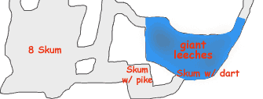
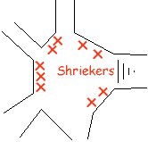

unidentified student at the back of the classroom screeched,
unidentified student at the back of the classroom screeched,
The Narrator

Katriana cast Control Water to reduce the pool to a muddy pit, followed quickly by Transmute Mud to Rock. Nine giant leeches squirmed up above the surface of the rock as it congealed. One leech emerged under Katriana's feet, and bit before she even knew it was there. [Editor's note: as leeches presumably have rather poor reflex saves, statistics would imply a vast number of leeches trapped beneath the newly formed rock.]
Two Skum, apparently sensing the commotion, appeared at the far side of the room. One immediately ran off to raise an alarm (Chaden chased it down and killed it). The second threw a dart at Katriana before being disemboweled by Sabrina, who was herself attacked with a pike by a third Skum hiding in a concealed redoubt.
Though an alarm had not been raised, enough Skum had noticed the commotion to be a nuisance. Grapthar put his Cleave feat to good use, repeatedly dropping one opponent and immediately hacking into another. Chaden peppered the foes surrounding Grapthar with arrows, with Edwin contributing the occasional Magic Missile. Altogether five Skum were defeated.
The giant leeches proved tougher. Katriana used Produce Flame to kill one while Edwin dropped another with several Magic Missiles. Sabrina ripped two leeches apart and Chaden fired arrows into another until it stopped moving. Eventually only a few of the slowly squirming foes remained, which could be avoided without difficulty. Once attached the leeches secreted an anesthetic, Katriana had lost 20 hp and Sabrina 8 without realizing it. The wand healed Katriana, Sabrina, and Grapthar, and for good measure Katriana cast Remove Disease upon herself and Sabrina.
Chaden rooted around the refuse pile (after killing the Skum with the pike which had attacked Sabrina). She discovered:
Yes. You'll note the gnome, whom history credits as an accomplished alchemist, has no idea what is in them. He has been completely overrated by my colleagues.
Edwin bridged the chasm with a Wall of Stone eleven feet wide and twenty feet long. The party proceeded to cross, but near the far end Chaden was roughly yanked off the bridge like a puppet on a string. She arced across to hit near the bottom of the chasm with a jarring crash, and was then slowly pulled upwards. Some sort of giant kingfisher scorpion was visible in a hole immediately above her, apparently reeling her in. A 25 on Knowledge(Dungeoneering) was not sufficient to identify the creature. Chaden managed to cast Orb of Cold, but the creature did not even flinch. It dragged her up and bit for 30 hp of damage, apparently trying to cut off her arms and legs.
The party swung into action. Katriana summoned an Earth Elemental, which travelled through the stone to attack the scorpion-thing. Edwin cast Baleful Polymorph, transforming the creature into a chicken. The elemental gleefully squished it into pulp.
When the creature polymorphed Chaden abruptly began to fall. Her ring of Feather Falling activated, but she was still in danger of being swept away when she hit the water. Grapthar threw a rope, and Edwin cast Animate Rope to make it snake over and wrap itself around Chaden. Katriana cast Spider Climb on her, allowing her to walk up the stone to the creature's lair. She found various bones and detritus but no other treasure. Two charges of the Wand of Siryl plus healing spells from Grapthar restored her to health.
"That was a Cave Fisher. I believe there are several specimens in captivity in the Greyhawk zoo. Fascinating creatures, really: they evolved in a symbiotic relationship with adventurers, which provide the main staple of their diet. They digest weapons and armor to get minerals for their chitinous exoskeleton, and they need the gold or jewels from an adventurer's belt pouch to provide roughage for their gizzard. When there are no adventurers around they go into stasis, with a dramatically lowered metabolism. They are, in fact, perfectly evolved for life as a random encounter."
"That doesn't sound like a symbiotic relationship, it sounds like a predator. How do adventurers benefit from the relationship?"
"Hmm? The adventurers get additional XP, of course."
The Narrator

The party walked for another hour until the tunnel opened into a spacious cavern. A faint tap-tapping could be heard from ahead, along with a dim glow of light. As they drew closer wafts of rotting garbage assaulted their noses, likely indicating the cultivation of Shriekers.
There were nine Shriekers in a chamber with many hallways. Executing "Shrieker Elimination Plan 12", Grapthar cast Silence on a coin which Chaden threw in amongst the Shriekers. However as Grapthar and Chaden began to hack away four of the giant mushrooms sprouted tentacles and attacked! Chaden was hit in the leg and abdomen, and had to make two Fortitude saves. Katriana quickly cast Junglerazer, destroying two of the tentacled horrors and three normal Shriekers. Edwin destroyed a third tentacled mushroom with Magic Missiles, while the fourth was hacked to bits along with the remaining Shriekers.
Regrouping back in the hallway, the party determined the four tentacled creatures had been Violet Fungi, which are often found in groups with normal Shriekers.